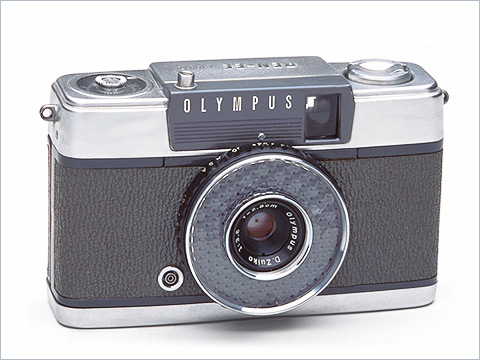
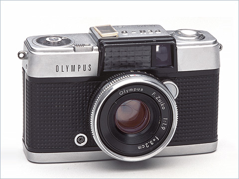
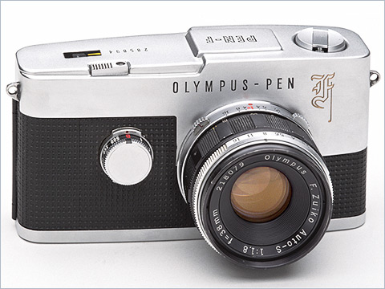

With the Olympus Pen EE, the emphasis was on efficiency. Features included fixed focus, a shutter speed of 1/60 sec., and automatic exposure adjustment. Anyone could take beautiful photographs simply by pushing the button. The camera was priced at ¥10,000 yen. Olympus eventually introduced eight models in the Olympus Pen EE series, which became a driving force for the popularity of the Pen cameras.

The Olympus Pen D was introduced in 1962 as the top model in the Olympus Pen range. Many professional features were packed into its compact body, including a high-performance F1.9 large-aperture lens, a high-speed 1/500 sec. shutter, and a built-in exposure meter that allowed direct reading of the LV.

The Olympus Pen F was the world's first and only half-frame system single-lens reflex camera, released in 1963. The camera featured a porro-prism finder and was the first to have a rotary titanium shutter. It could be used with a highly versatile range of 20 exchangeable lenses. The Olympus Pen F was a revolutionary camera packed with innovative features. The rotary shutter, which combined speed with durability, was reportedly perfected only after long and hard effort by Olympus engineers.